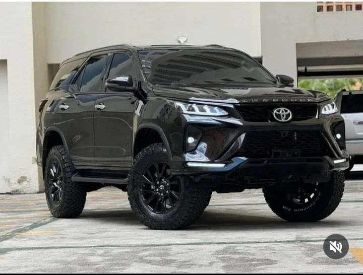

SW4 SRX Platinum (5 lugares): Versão de entrada/intermediária focada em custo-benefício, mantendo os recursos de segurança do Toyota Safety Sense. SW4 SRX Platinum (7 lugares): Similar à anterior, mas com a terceira fileira de bancos para maior capacidade de passageiros. SW4 Diamond (7 lugares): Versão topo de linha, que oferece acabamento superior, sistema de som JBL, teto preto (duas cores), ar-condicionado dual zone e câmera 360º.
Motorização: 2.8 Turbo Diesel (204 cv e 50,9 kgfm de torque). Tecnologia: Central multimídia de 9" com Android Auto/Apple CarPlay, monitoramento do veículo pelo celular (conectividade avançada) e sistema Toyota Safety Sense (frenagem automática, alerta de faixa, etc.). Visual: Atualizações focadas em iluminação e acabamento na versão Diamond. Rodas: Rodas de liga leve aro 18".
